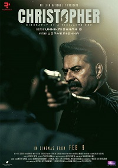
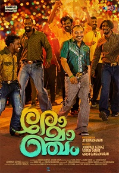

SPADIKAM
Spadikam (transl. Crystal) is a 1995 Indian Malayalam-language action drama film written and directed by Bhadran and produced by R. Mohan through Shogun Films. The film stars Mohanlal and Thilakan with Urvashi, Spadikam George, K. P. A. C. Lalitha, Rajan P. Dev, Silk Smitha, Nedumudi Venu, Chippy, and V. K. Sreeraman in supporting roles
Ela Veezha Poonchira

Ela Veezha Poonchira is an Indian Malayalam-language crime thriller film directed by Shahi Kabir, who is known for scripting Joseph and Nayattu. It stars Soubin Shahir, Sudhi Koppa, and Jude Anthany Joseph. The film was released on 15 July 2022. Ela Veezha Poonchira is the first ever Malayalam film to be released in Dolby Vision 4K HDR
CHRISTOPER
Christopher is a 2023 Indian Malayalam-language action-thriller vigilante film directed by B. Unnikrishnan and written by Udaykrishna starring Mammootty in the titular role, with an ensemble cast of Vinay Rai, R. Sarathkumar, Sneha, Amala Paul, Aishwarya Lakshmi, Aditi Ravi, Shine Tom Chacko, Deepak Parambol and Siddique. The cinematography is handled by Faiz Siddik and the music is composed by Justin Varghese
ROMANCHAM
Romancham (transl. Goosebumps) is a 2023 Indian Malayalam-language comedy horror film written and directed by Jithu Madhavan in his directorial debut, starring Soubin Shahir, Arjun Ashokan, Sajin Gopu, Siju Sunny and Abin Bino in the lead roles